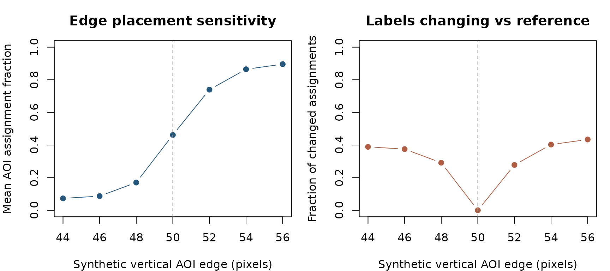
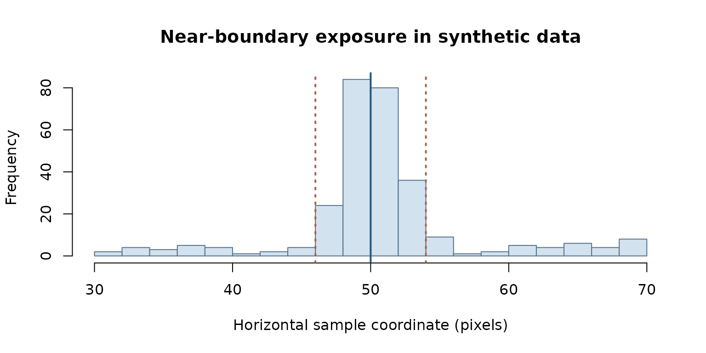

AOI edge perturbation: which assignments remain stable?
Source:vignettes/aoi-boundary-stability-october-2026.Rmd
aoi-boundary-stability-october-2026.RmdQuestion
Area-of-interest (AOI) boundaries are part of the operational measurement model. When fixation coordinates cluster close to an AOI boundary, a small change in its placement can alter AOI labels without any actual change in gaze behavior. This synthetic, source-only sensitivity demonstration illustrates that problem; it does not validate real Gazepoint calibration, screen coordinates, stimulus-specific AOI definitions, or attention constructs.
The experiment generates 12 independent synthetic participants with 24 point observations each and a deliberately concentrated horizontal coordinate distribution near a vertical AOI edge at 50 pixels. It examines alternate AOI-edge placements between 44 and 56 pixels.
source(system.file("research", "october_2026_aoi_boundary_sensitivity.R",
package = "gp3tools"), local = TRUE)
points <- gp3tools_october_aoi_points()
audit <- gp3tools_october_aoi_sensitivity(points)
stopifnot(nrow(points) == 288L,
audit$changed_fraction[audit$boundary == 50] == 0)
audit## boundary row_aoi_fraction participant_equal_fraction changed_fraction
## 1 44 0.07291667 0.07291667 0.3888889
## 2 46 0.08680556 0.08680556 0.3750000
## 3 48 0.17013889 0.17013889 0.2916667
## 4 50 0.46180556 0.46180556 0.0000000
## 5 52 0.73958333 0.73958333 0.2777778
## 6 54 0.86458333 0.86458333 0.4027778
## 7 56 0.89583333 0.89583333 0.4340278
## n_participants n_rows
## 1 12 288
## 2 12 288
## 3 12 288
## 4 12 288
## 5 12 288
## 6 12 288
## 7 12 288Figure 1. Sensitivity to AOI geometry
gp3tools_october_aoi_plot(audit)
Original R-generated, synthetic illustration of how AOI edge displacement changes assignment and disagreement with the declared 50-pixel reference. No measurement-accuracy claim.
Figure 2. Which observations are at risk?
graphics::hist(points$x, breaks = 25, col = "#D2E2EF",
border = "#56728A", main = "Near-boundary exposure in synthetic data",
xlab = "Horizontal sample coordinate (pixels)")
graphics::abline(v = c(46, 50, 54), lty = c(3, 1, 3),
col = c("#B05E43", "#24577B", "#B05E43"), lwd = 2)
Synthetic x-coordinate distribution around the nominal AOI boundary; no participant recording or camera calibration measurement.
Relevance for data quality and inference
The nominal AOI edge is a researcher-declared analytic decision; its perturbation range should be justified by stimulus geometry, registration residuals and the actual experiment, not chosen retrospectively to manufacture robustness. The row change fraction describes label instability among observed samples, while participant-level estimates require participant-aware uncertainty and missingness handling. No confidence bounds, calibration parameters or construct validity are estimated here.
For real studies, pair the sensitivity plot with recorded
screen/stimulus dimensions, coordinate conventions, calibration accuracy
and the pre-specified AOI mapping. This demonstration adds no exported
gp3tools public function, and its results are not evidence
of device precision or robustness across stimuli.